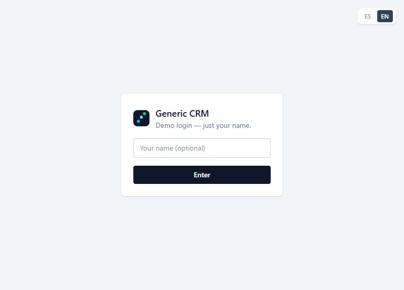
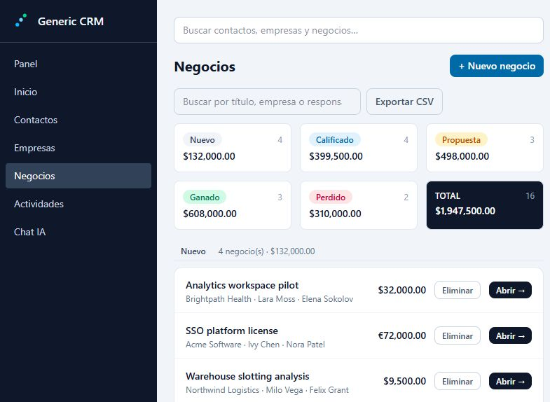
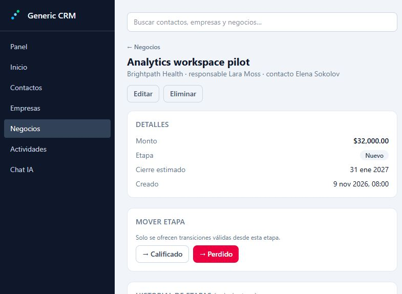
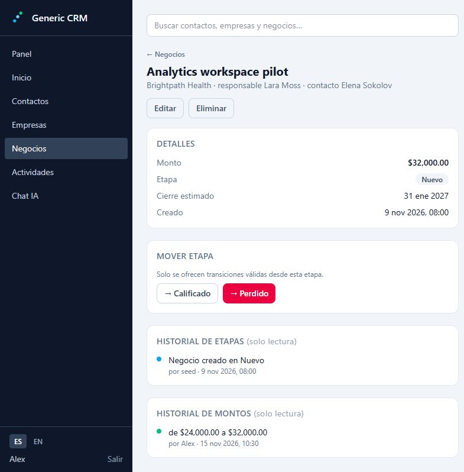
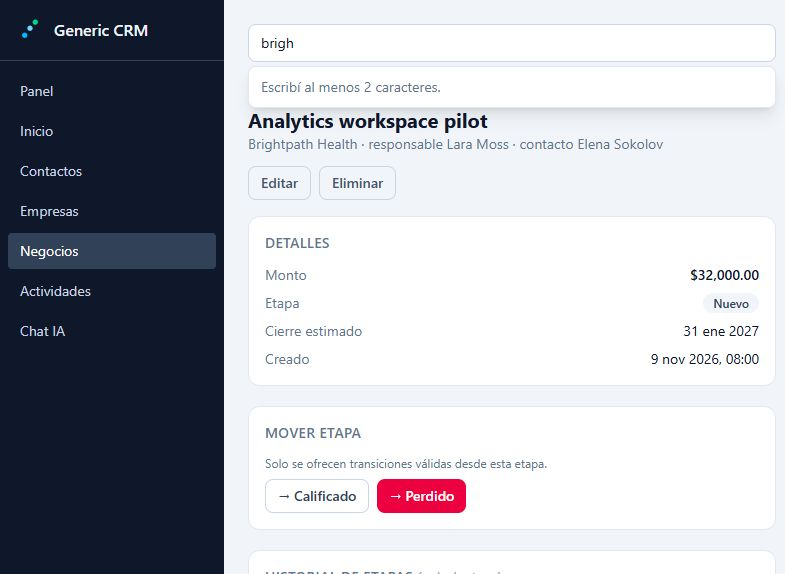
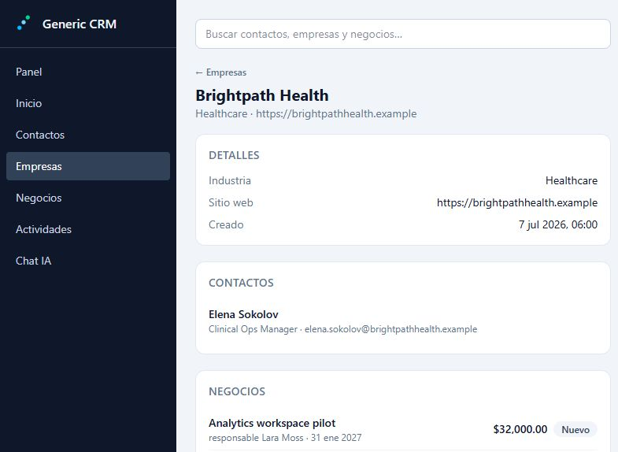
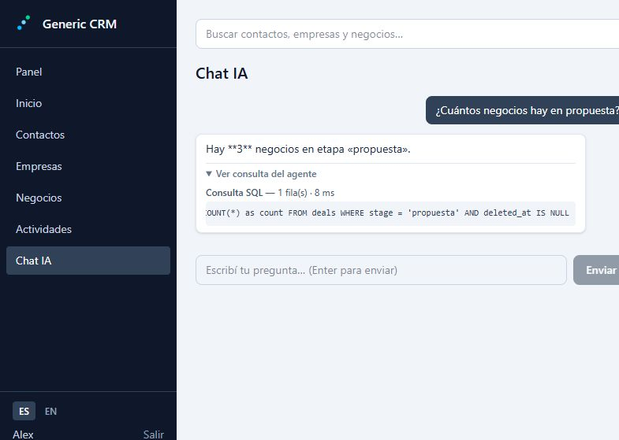
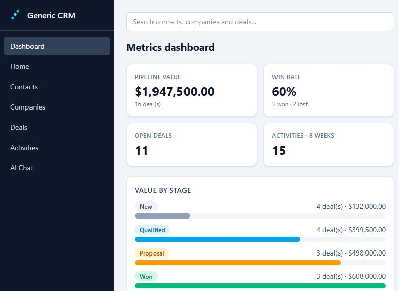

🏭 Generic CRM — backoffice + asistente IA sobre tus datos
CRM autocontenido para portafolio: SPA React + API Node local + SQLite embebida que se crea y se pobla sola. Login sin contraseña (demo), seed data determinista, interfaz completa ES/EN y un agente de IA que responde preguntas sobre los datos reales con SQL de solo lectura.
React 18 + Vite + TailwindHono + NodeSQLite (better-sqlite3)Zod en todos los bordesReact Query + React TableVitest · 237 testsPlaywright E2EAgent tool-calling (OpenAI-compatible)
237tests verdes
96%coverage server
<40msp95 listados @10k rows
<1sarranque frío + seed
0deps de cloud · cero config
1 · Login demo sin contraseña

Se entra con cualquier nombre — la sesión vive en una cookie firmada y el nombre queda como actor de las trazas de auditoría. Sin credenciales: es una demo de portafolio.
2 · Dashboard de métricas

Primera pantalla: valor del pipeline por etapa, tasa de éxito, negocios abiertos y actividades de las últimas 8 semanas — charts propios en CSS/SVG, sin librerías. Toda cifra es computable desde la vista de negocios (verificable: QA cross-checkeó 9/9 valores contra la base).
3 · Pipeline de negocios

Board agrupado por etapa con conteo y monto por grupo, botón de export CSV (RFC 4180, BOM, abre limpio en Excel) y búsqueda por título/empresa/responsable. Las etapas avanzan solo por transiciones válidas: nuevo → calificado → propuesta → ganado/perdido.
4 · Detalle con auditoría inmutable

Cada negocio muestra dos historiales de solo lectura: etapas (quién movió y cuándo) y montos (de $24,000 a $32,000, por Alex). Los eventos se escriben en la misma transacción del cambio y no existe endpoint que pueda editarlos ni borrarlos.
5 · Búsqueda global

Un solo campo busca contactos, empresas y negocios a la vez; resultados agrupados con score de relevancia (el mismo ranking que usa el agente IA) que navegan al detalle.
6 · Ficha de empresa

Vista de empresa con su contacto y sus negocios asociados — generada por la navegación desde la búsqueda global.
7 · Asistente IA sobre los datos (RAG híbrido)

El agente traduce la pregunta a SQL de solo lectura contra la misma SQLite y responde con las cifras reales — y muestra la consulta exacta que corrió (transparencia anti-alucinación). Guardarrails por construcción: solo SELECT, límite de filas, timeout, rate limit. Funciona con cualquier endpoint OpenAI-compatible (OpenRouter, OpenAI, Groq, Ollama local); sin API key degrada honestamente explicando cómo activarlo.
8 · Interfaz bilingüe ES/EN

Toggle de idioma en toda la UI (incluye etapas, fechas y el propio asistente). Sin mezcla de idiomas en ninguna vista — i18n propio, sin dependencias.
Cómo correrlo
git clone <repo> && cd generic-crm
npm install
npm run dev # → http://localhost:5173 (la base se crea y se pobla sola)
Extras: npm run reset (re-seed determinista) · npm run seed:volume && npm run bench (10k filas + p95) · npm run smoke (E2E Playwright) · chat IA: copiar .env.example a .env y poner una key de OpenRouter gratis.
Guion de demo (3 minutos)
Entrar — escribir cualquier nombre, sin contraseña (15s).
Dashboard — "toda la foto del negocio en una pantalla" (30s).
Negocios — board por etapa + export CSV descargable (30s).
Abrir un negocio — historiales de etapa y monto, mover de etapa inválida imposible (45s).
Búsqueda global — "brigh" → empresa, contacto y deals (20s).
Chat IA — "¿cuántos negocios hay en propuesta?" → respuesta + SQL visible; toggle a EN y repetir (60s).
Ingeniería detrás: 237 tests (unit + integración con SQLite real + E2E), 4 rondas de QA adversarial (0 críticos/mayores abiertos), migraciones SQL numeradas, seed determinista byte a byte, validación Zod en todos los bordes, rate limit, soft delete, inmutabilidad de auditoría probada por ausencia de rutas. NFRs medidos: p95 <40ms con 10k filas, arranque frío <1s, export de 10.000 filas en 112ms.